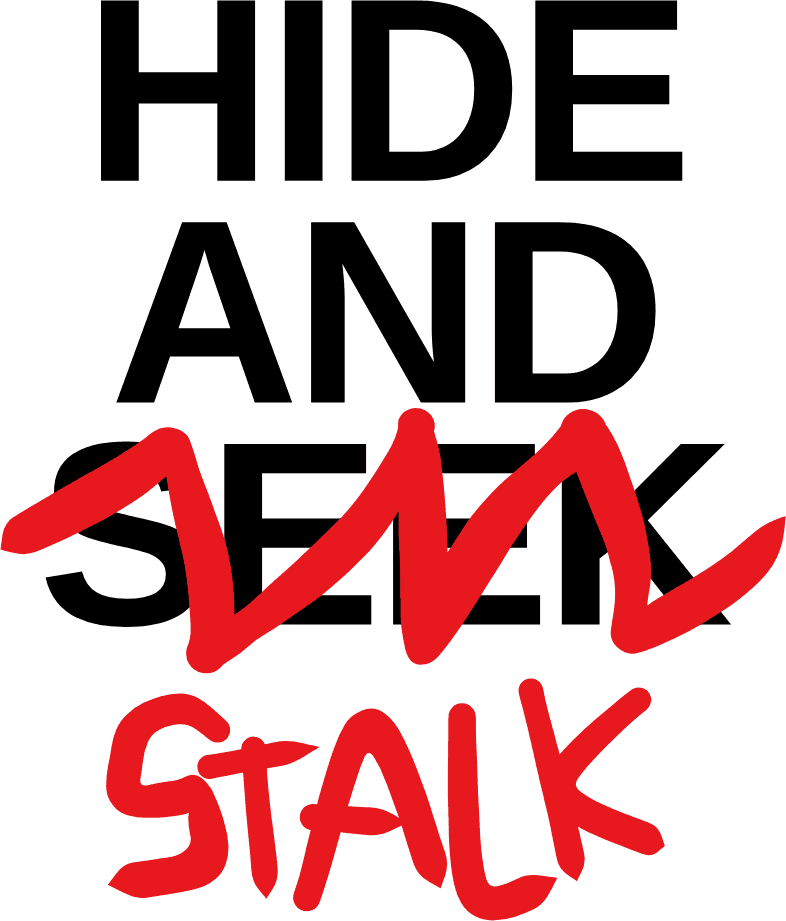
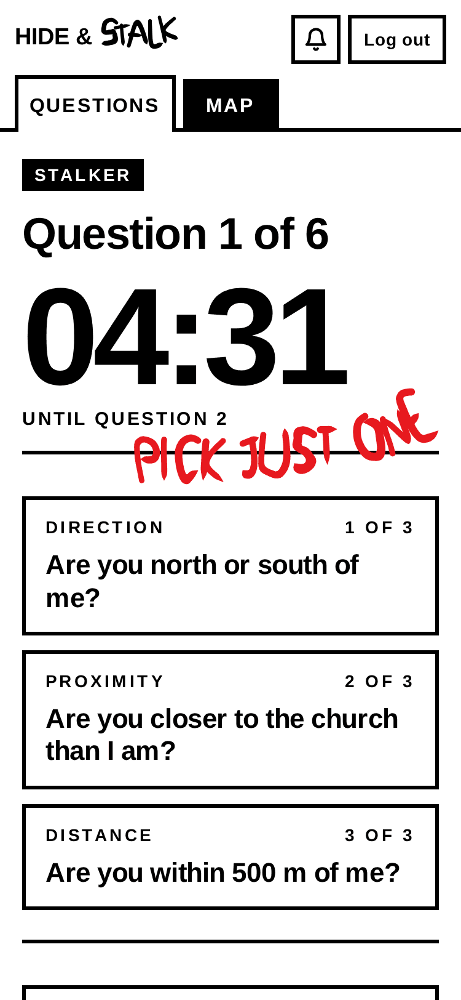
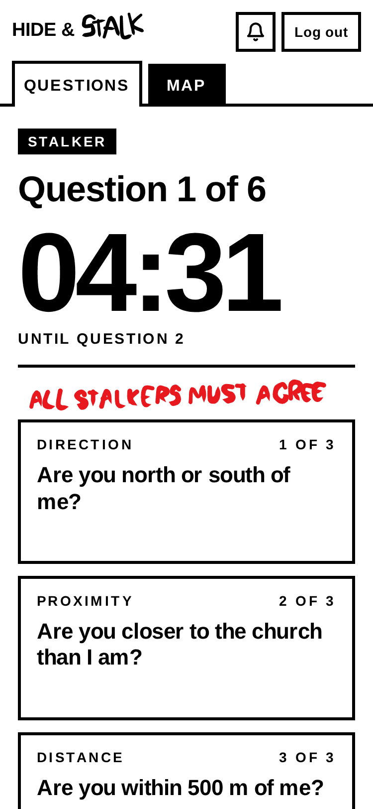
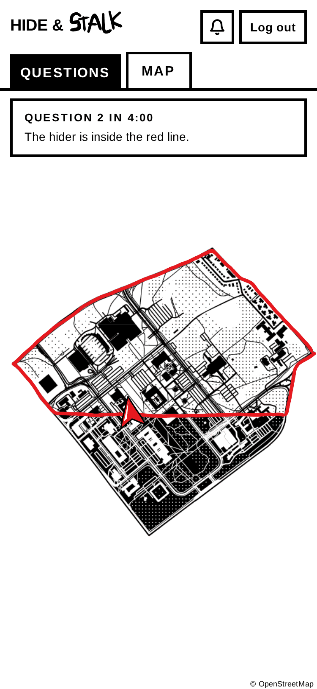
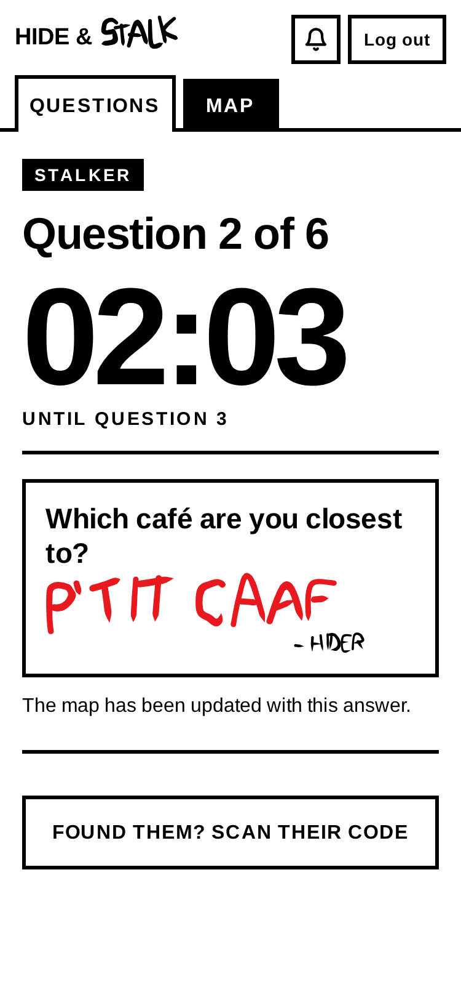
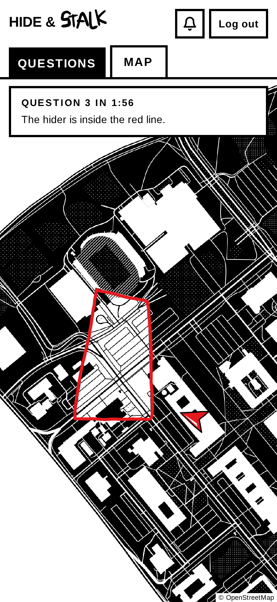
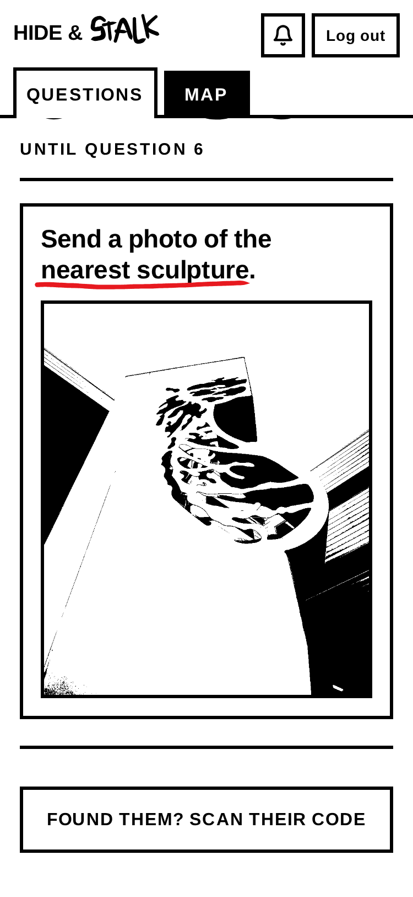

The goal: survive for 30 minutes without being found.
One player (the hider) hides somewhere on campus. The others (the stalkers) have to find the hider.
- One round
- 40 min max: 10 min to hide, 30 min to find.
- Bring
- A charged phone and warm clothes.
- When
- Mon Oct 5, 13h
- Where
- Grand Axe
One round, step by step
-
Stalker's phone 
Now we switch to the STALKER's phone. The 10 minutes are up: the hunt begins. The stalker gets three questions (the three boxes) and can ask the hider one of them. Every 5 minutes, three new questions appear; the timer counts down to the next. Six questions in total, so 30 minutes to find the hider.
-
Stalker's phone 
Still on the STALKER's phone. The stalker taps “Are you north or south of me?” to pick the question: it's now boxed in red. Then the stalker taps “Send this question”, and it is sent to the hider's phone.
-
Stalker's phone 
Back to the STALKER's phone. On the map, we see the whole campus. The answer was “North”, so everything south of the line is ruled out, and the app blacks it out. The red line goes around what's left: the hider is somewhere in there. Here, the red arrow is the stalker: on every phone, the red arrow is you, the person holding it. Obviously, the hider is not shown on the stalkers' map.
-
Stalker's phone 
Back to the STALKER's phone. The hider's answer is in, written in red: “P'tit Caaf”. Now the stalker knows two things: the hider is north of the line, and closer to P'tit Caaf than to any other café.
-
Stalker's phone 
Still on the STALKER's phone, back on the map. The map updates to display this new information: everything closer to another café than to P'tit Caaf is blacked out too. Only a small zone is left inside the red line: the hider is somewhere in there. The red arrow is the stalker, very close now!
Hider rules
-
Stay visible from where people walk. From there, a stalker must be able to see you without opening anything.
Why. The game is about crossing campus, not about spending 15 minutes opening every locker on a floor to find the hider.
- Where people walk means any public place people walk through: sidewalks, streets, bike paths, forest trails, hallways, the main areas of a library or a cafeteria.
- Not where people walk: classrooms, bathrooms, offices. You can hide in a classroom, but a stalker in the hallway must see you through its open door. The same idea applies outside. You can hide in the woods, but a stalker on the trail must be able to see you.
- Stay on campus.
-
No running to your hiding spot. Stalkers can run.
Why. So the stalkers don't spend 30 minutes walking in a straight line to catch up. That's not fun.
- Stalkers wait at the start, and close their eyes while the hider walks away.
-
Hider: freeze. Once the hunt starts, stay put.
Why. The game breaks if you move.
- Stop moving when the 10-minute timer ends.
- A few steps to answer a question or take a photo are fine. Then go back to your spot.
-
Don't hide underground. No tunnels, no basements.
Why. GPS doesn't work underground, and the app runs on it.
-
Answer truthfully.
When in doubt: would the stalkers call it clever, or annoying? The rules are there to make the game fun for your opponents.
- Not sure? Say so in the call, and give your best honest answer. Got one wrong? Fix it with Change, right away.
- “…of me?” and “…than I am?”: go by what your map draws. It's drawn from where the stalker was when they sent the question.
-
Answer fast. As fast as you reasonably can.
-
Found? Show your code. Stalkers win.
The questions
There are 41 unique questions. Here are a few of them, to give you an idea.
-
Are you north or south of me?
The line goes through where the stalker was when they sent it.
-
What is the second digit of the nearest room number?
The number by the nearest door. Outside? Answer N/A.
-
Are you within 200 m of me?
The circle is around where they were when they sent it.
-
Send the heatmap around you.
Darker means busier. Your phone sends the heat around you. The stalkers find the match on their map.
-
Are you closer to the church than I am?
Closer than they were when they sent it, as the crow flies.
-
How far is the nearest road open to cars?
Judging by eye is fine.
-
Which àVélo station are you closest to?
Your map pins every station. Closest as the crow flies.
-
Which café are you closest to?
As the crow flies. The app lists the nearest first.
-
Are you inside a building or outside?
Inside means inside a building's walls. A covered walkway or a bus shelter is outside.
-
In what part of Vachon are you?
The stalkers name the building; your map splits it into parts.
-
What kind of path are you closest to?
Rule 1 keeps you visible from one.
-
How many minutes is my walk to you, on Google Maps?
From where they asked: the app gives you their position.
-
Send a photo of the nearest sculpture.
Taken now, from your spot. Show as little as you like, but a sculpture has to look like a sculpture.
Stalker's phone 
FAQ
-
Can I leave after one round?
Yes. When the round ends, tap Leave the game, so the app won't pick you to hide next.
-
Can I hide inside?
Yes, if a stalker can see you from where people walk without opening anything: from a hallway, or from the main area of a library or a cafeteria. In a classroom, they must see you from the hallway, through its open door. Not underground.
-
Can't the stalkers just see the hider on the map?
No. The stalkers only see each other. The hider sees them coming.
Monday, October 5 · 13h · Grand Axe
Count me inInspired by Jet Lag: The Game's Hide + Seek.
A social game
Everyone is in a Discord call, the hider too. Talk all you want: tease, bluff, trash-talk. Only the app's answers count. Teams are made on the day of the event, before the game starts. Each team has its own voice channel: join yours before the hider starts the game.